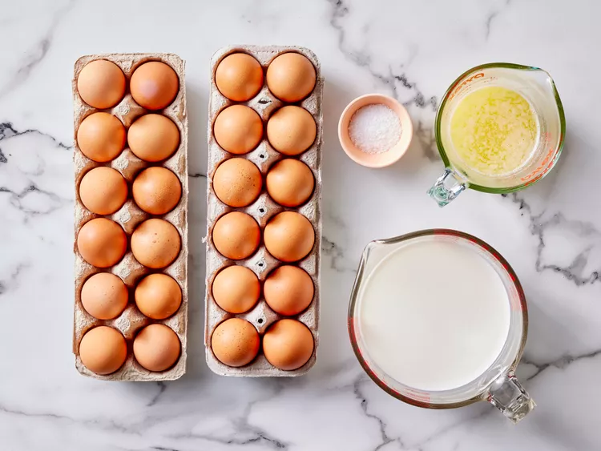
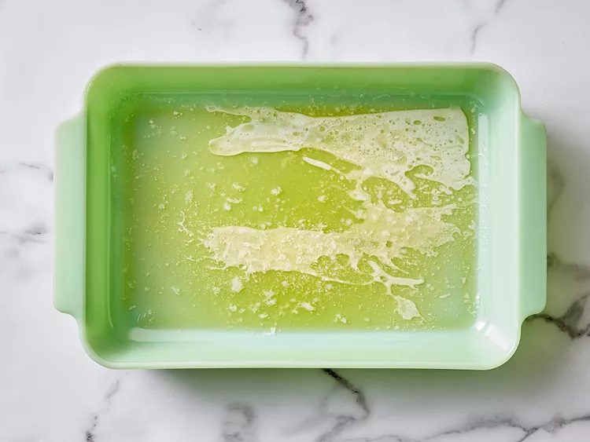
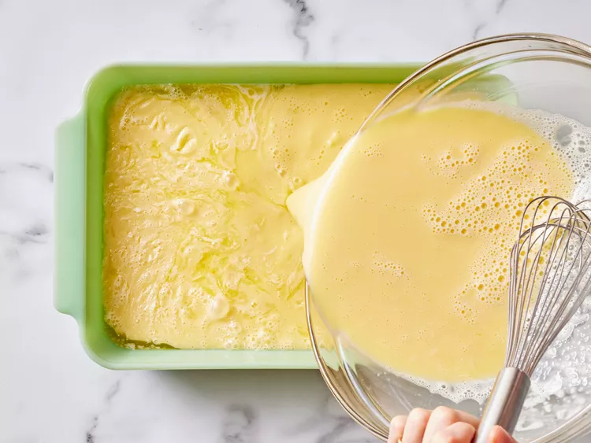
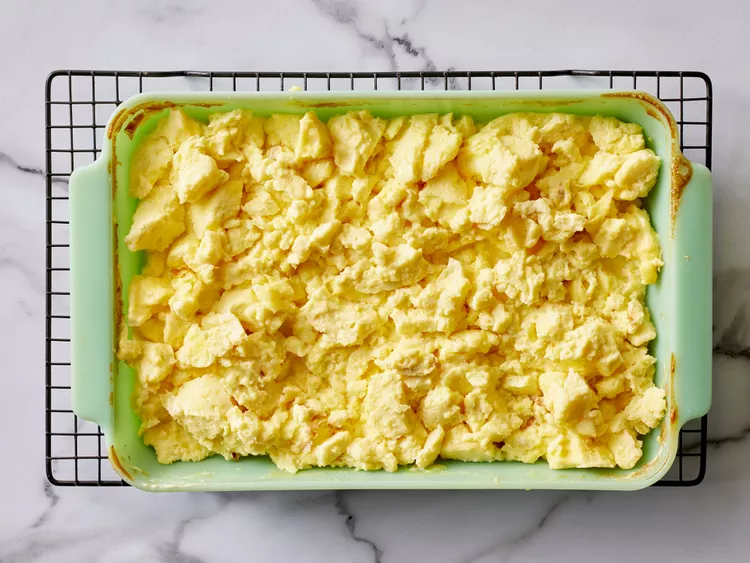

Baked scrambled Egg

These baked scrambled eggs are light and fluffy and are a snap to put together for a big crowd. I usually make two pans for our Christmas and Easter brunch, and I never have many leftovers!
ingredients
- ½ cup butter, melted
- 24 large eggs
- 2 ¼ teaspoons salt
- 2 ½ cups milk
Steps
- Gather all ingredients. Preheat the oven to 350 degrees F (175 degrees C).

- Pour melted butter into a 9x13-inch glass baking dish.

- Whisk eggs and salt together in a large bowl until well blended. Gradually whisk in milk. Pour egg mixture into the buttered dish.

- Bake uncovered in the preheated oven for 10 to 15 minutes. Stir egg mixture and continue to bake until until eggs are just set and no longer runny, about 10 to 15 minutes more.

- Serve and enjoy!
Back to Home